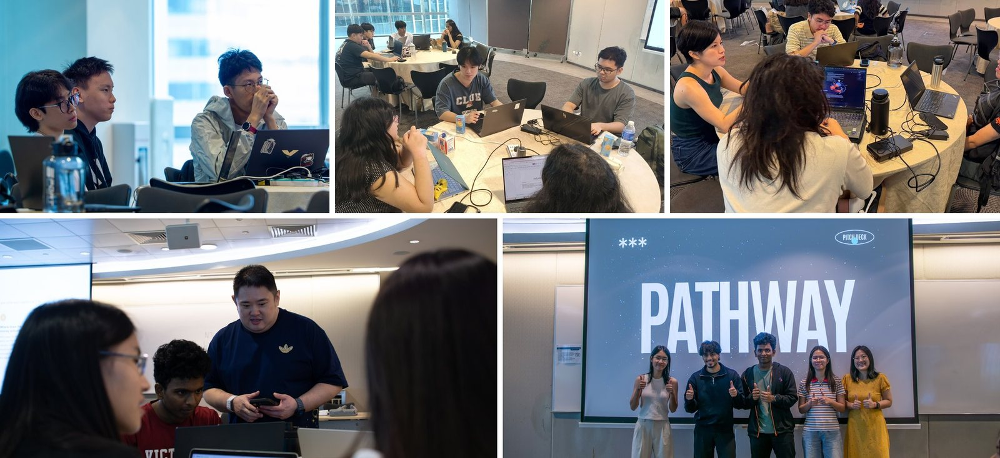
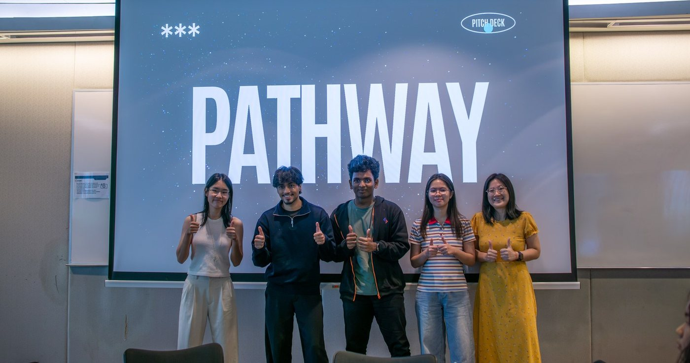
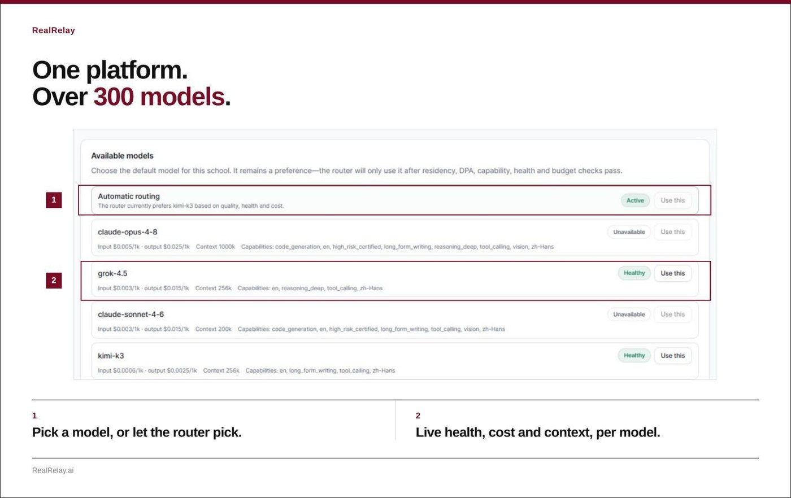
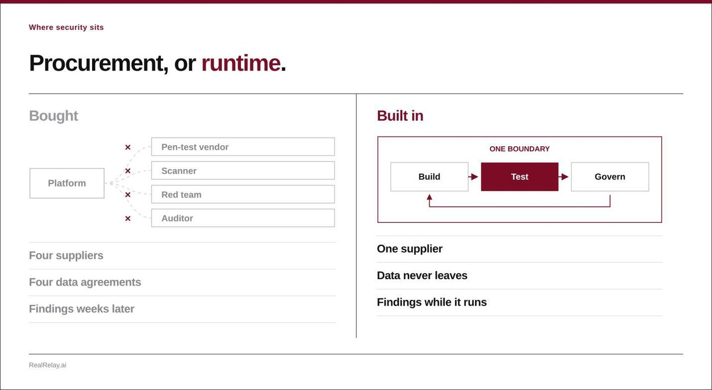
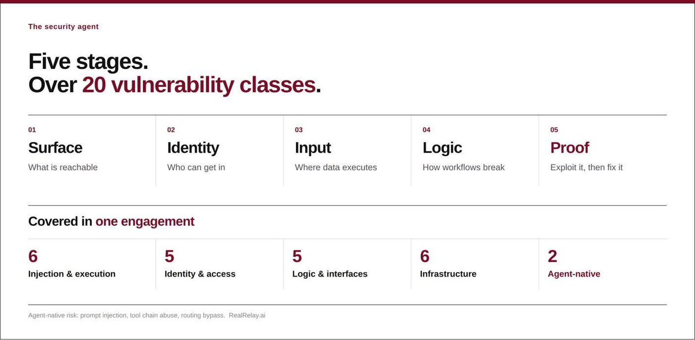

When AI learns to defend itself
Edvance International (1410.HK), CWG Innovations and RealRelay rewrite agent security.

Singapore, 13 September 2026. APEX Bootcamp: RealRelay Edition ran in Singapore on 12 and 13 September 2026, organised by the Digital Defence Alliance Singapore (DDAS) and co-hosted by CWG Innovations, a partner company of Edvance International (1410.HK). It was open to students and young working adults with no prior technical or AI experience. Over two days, teams designed an AI agent and built it on RealRelay.
The programme ran on the same platform a school would use. RealRelay was built for education first, and the two days compressed a cycle that a teacher and a class would normally work through over a term.
Who was in the room, and what they built
The first edition was oversubscribed within days. For this edition, participants were selected against three criteria: they were already serious about AI, they arrived with an idea of their own, and they wanted the two days to build it rather than hear about it.
Mr Aaron Ang, Regional Director at CWG, mentored the teams himself and took them through it in stages. By the end of the two days every team had a working Minimum Viable Product (MVP) AI agent.
“Before this I was jumping between four or five different AI tools and spending more time googling which model was supposed to be good for what than actually building. RealRelay put all of it in one place, so I could stop thinking about the tools and start thinking about the problem we were trying to solve. By the end of day two I had an agent that actually did something, and I built it myself.”
Lim Ying Yi Chloe, Year 2 Big Data and Analytics, Temasek Polytechnic
Participants were also impressed by the way RealRelay handles cyber and AI security. Those protections sit inside the platform, so the checks happen while the agent is being built rather than at the end, and that is key to building a good agent.

One platform, over 300 models
RealRelay is an agentic AI platform that aggregates over 300 mainstream AI models behind a single interface. Its agents are built from functional modules for information retrieval, courseware generation, email processing, business data analysis and team collaboration. Users describe what they need in natural language to create, publish and share custom agents on the platform. RealRelay will also support agent trading, so people can monetise what they build.

Built for the classroom, and more
Education is where RealRelay started. The goal was a full ecosystem rather than a standalone tool, so that students across disciplines can develop agentic AI solutions for their own fields. Teaching, collaboration and assessment run as a closed loop entirely on the platform. Lecturers take part in the whole development process, offering guidance and supporting iterations while the work is happening, instead of grading only the finished deliverable.
A dedicated teaching-analytics module sits underneath it. The module analyses classroom recordings and student learning data so teachers can read the state of a class in real time and identify where individual students are weak, which makes differentiated instruction practical rather than aspirational.
All of it runs under the same governance as the rest of the platform. The school controls permissions, security, auditing, retention and access centrally, class by class or department by department.
Education is the first of several verticals. The team is already building out cybersecurity, with fintech to follow, and after that the industries its own market research has flagged as the ones where agentic AI pays off earliest. Each vertical is built the same way: functional modules shaped around how that industry actually works, on the same platform and under the same governance.
Security built into the platform
Conventional AI platforms leave security testing to a separate purchase. A penetration testing vendor, a scanner, a red team and an auditor. That is four suppliers, four data agreements, and findings that arrive weeks after the work.
RealRelay keeps it inside one boundary. Build, test and govern sit on the same platform, with one supplier, data that never leaves, and findings that surface while the agent is running.

Within an organisation’s authorised scope, the security agent conducts a five-stage assessment covering more than 20 vulnerability categories: surface, identity, input, logic and proof. Unlike traditional tools, it carries out practical vulnerability exploitation before it generates a report. Outputs are risk ratings, reproduction evidence and remediation guidance. Once fixes are deployed, automatic re-testing and record keeping close the loop.

The loop re-arms every time an agent changes, which matters because agentic systems change faster than any assessment schedule can follow. The platform runs in cloud, on-premises and air-gapped deployments, and customers can hold their own keys and connect local models, so the engine sits wherever the data is allowed to be.
Because agent development and security validation are completed in a single closed-loop environment, there is no need to integrate multiple systems and vendors, and the coordination and compliance costs that come with them fall away.
Edvance International’s security DNA
Edvance International is a leading cybersecurity solutions distributor in Hong Kong with more than 20 years in the field, and has been applying that experience where artificial intelligence and cybersecurity meet.
Agents at scale create risks that conventional security methods do not cover, across creation, distribution and runtime. Supply chain exposure, data governance, and protection that cannot keep pace with iteration are problems an organisation meets as soon as it starts building agentic AI.
Against that backdrop, together with CWG Innovations, Edvance International has taken years of hands-on attack and defence experience and risk-governance practice and embedded them deep in RealRelay’s underlying architecture. Security protection moves from post-incident remediation to the product-design phase, with threat identification, vulnerability validation and closed-loop remediation running through the whole chain of agent building, testing and governance. Security becomes an innate capability of an AI agent rather than a retrofitted patch.